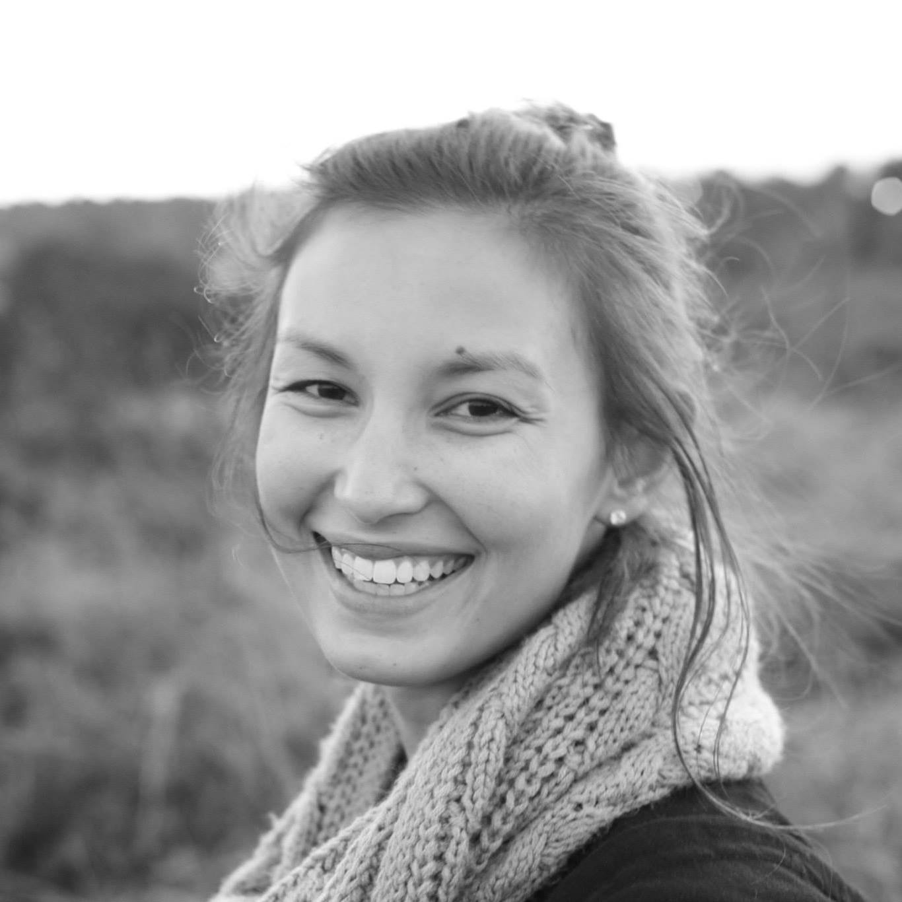

About Me
I am a currently a Program Operations Manager at UW Medicine, with experience managing high-performing teams and departmental budgets sponsored by state, federal, and gift funding. My educational background is in finance. Additionally, I have obtained a Master of Arts in Policy Studies and an MBA from the University of Washington, Bothell which provide me with a well-rounded educational background and has helped me develop the skills needed to lead successful teams. I have also obtained certification as a Lean Six Sigma Green Belt which has been useful in leading process improvement projects within the UW School of Medicine. I am currently a student in UW’s Coding Boot Camp program which will be completed in November 2019.
In my free time I enjoy running, walking, eating, and spending time with friends and family.